i2b2 Patient Sets View
The Patient Sets view is designed to display a list of the most recent patient sets created when running a query. The patients within the patient set are also available for viewing.
Layout of the Patient Sets View
Introduction
This section describes the layout and contents of the Patient Sets view.
A Patient set () is created when running a query that has either Patient set or Timeline checked off. The only other way to generate a Patient set is to check off Get Everyone when running a query.
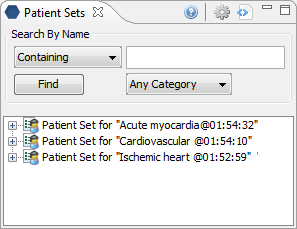
Navigation
This section contains information about renaming and deleting a patient set as well as setting the display options.
Users can easily change the name of a patient set by selecting Rename from the popup menu.
1. Using the right mouse button, click on the Patient set to be renamed.
2. A popup menu will open.
3. Select Rename from the list.

4. The Renaming Dialog box will open.
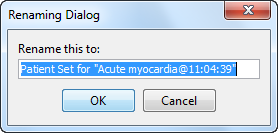
5. Enter the new name for the Patient set and click on the OK button.
6. The Patient set will now display in the view with the new name.
Users can remove a patient set from the list by selecting Delete from the popup menu.
1. Using the right mouse button, click on the Patient set to be deleted.
2. A popup menu will open.
3. Select Delete from the list.

|
|
WARNING: |
|
|
|
Once you click on Delete, the patient set will be removed. Therefore you need to make sure you want to remove it from the list. |
|
Users can refresh the list of Patient sets by selecting Refresh All from the popup menu.
1. Using the right mouse button, click on any of the Patient sets in the list.
2. A popup menu will open.
3. Select Refresh All from the list.

4. The list of Patient sets will be updated.
Users can define how many Patient sets to display and the
order in which they will appear in the list. The display options are set in the
Patient Sets Options dialog window, which can be access by clicking on the
Option ( ) button.
) button.
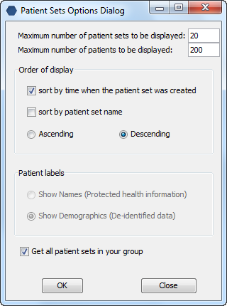
Maximum to Display
Patient Sets to Display
The Maximum number of patient sets to be displayed defines how many Patient sets will display in the Patient Sets view. Once the maximum number is reached the oldest patient set will no longer appear in the view.
|
|
TIP: |
|
|
|
Use the Workplace view to save those patient sets that will be used often. In addition to being more convenient it will also prevent you from losing a common patient set if the maximum number to display has been reached. |
|
Patients to Display
The Maximum number of patients to be displayed is used when you expand a patient set to view the list of patients. Once the maximum number is reached a message will appear informing you that you have reached the maximum defined and that continuing to retrieve all the patients in the list may affect performance. You will have the option to continue or to cancel the action.
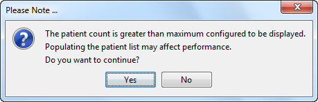
A Yes selection will close the window and display “Working…” under the Patient set. Once the list finishes compiling it will display all the patients in the set.
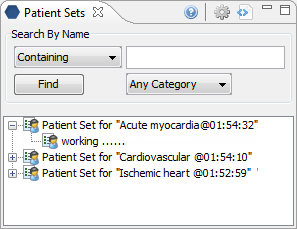
A No selection will close the window and display “Over maximum number of patients” under the Patient set name.
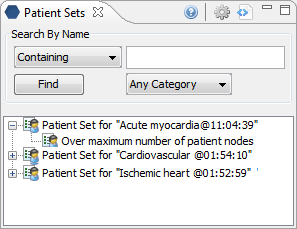
Order of Display
Sort by Time
Selecting sort by time when the patient set was created will sort the patient sets in the view by the date and time the patient set was created. Once you select to sort by time, you will need to define whether or not it will be in Ascending or Descending order.
Ascending: displays the oldest patient set first.
Descending: displys the newest patient set first.
|
|
NOTE: |
|
|
|
Renaming a patient set will not affect the sort order as the date and time is stored with the patient set. |
|
Sort by Patient Set Name
Selecting sort by patient set name will sort the patient sets in the view alphabetically by the name of the query. Once you select to sort by name, you will need to define whether or not it will be in Ascending or Descending order.
Ascending: patient sets are displayed in alphabetical order with the beginning of the alphabet at the beginning of the list. (A to Z)
Descending: patient sets are displayed in alphabetical order with the beginning of the alphabet at the end of the list. (Z to A)
Searching Patient Sets
This section describes how to search for a patient set or patient within the Patient Sets view.
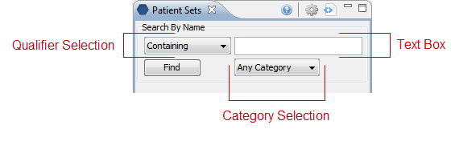
The first step in entering the search criteria is defining a qualifier. The first field is the “qualifier” and it is a drop-down list with four options:
1. Containing
The results returned will be those patient sets whose name or patient id contains the text entered in the search box.
|
|
NOTE: |
|
|
|
This search will return the broadest range of results. |
|
2. Starting with
The results returned will contain only those patient sets whose name or patient id begins with the text entered in the search box.
3. Ending with
The results returned will contain only those patient sets whose name or patient id ends with the text entered in the search box.
4. Exact
The results returned will contain only those patient sets whose name or patient id matches exactly to the text entered in the search box.
|
|
NOTE: |
|
|
|
This search will return the narrowest range of results. |
|
1. Click on the drop-down arrow located in the qualifier field.

2. Select Containing from the drop-down list.

3. In the text box enter the text for the patient set or patient you are searching for.
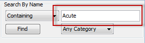
4. To narrow your search to a particular category, click on the drop-down arrow in the category selection box. Otherwise, accept the default of Any Category.
5.
Click on the Find button. 
6. The results will be displayed in the results section.

1. Click on the drop-down arrow located in the qualifier field.
2. Select Start With from the drop-down list.
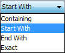
3. In the text box enter the text for the patient set or patient you are searching for.
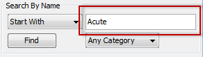
4. To narrow your search to a particular category, click on the drop-down arrow in the category selection box. Otherwise, accept the default of Any Category.
5.
Click on the Find button. 
6. The results will be displayed in the results section.
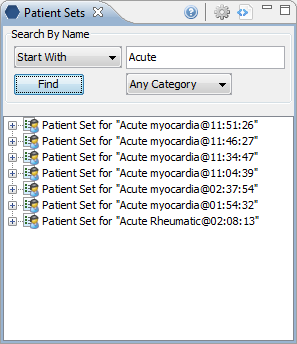
1. Click on the drop-down arrow located in the qualifier field.
2. Select End With from the drop-down list.
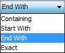
3. In the text box enter the text for the patient set or patient you are searching for.

4. To narrow your search to a particular category, click on the drop-down arrow in the category selection box. Otherwise, accept the default of Any Category.
5.
Click on the Find button. 
6. The results will be displayed in the results section.
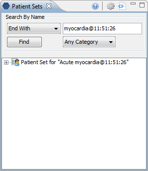
1. Click on the drop-down arrow located in the qualifier field.
2. Select Exact from the drop-down list.
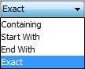
3. In the text box enter the text for the patient set or patient you are searching for.

4. To narrow your search to a particular category, click on the drop-down arrow in the category selection box. Otherwise, accept the default of Any Category.
5.
Click on the Find button. 
6. The results will be displayed in the results section.

Using a Patient Set
This section describes how to use a patient set.
Different parts of the patient set can be dragged and dropped (copied) from the Patient Sets view to other views in the i2b2 Workbench.
1. Patient set
A specific set of patients can be added to other views by dragging the Patient set () from Patient Sets view to one of the following views.
a. Timeline view; Create model for Timeline tab.
· Drop in the Patient Set field.
b. Query Tool view
· Drop in a Panel.
c. Workplace view
· Drop in the user’s folder or the share folder.
d. Patient Mapping view
· Drop in the Patient Set field.
2. Individual Patient
An individual patient can be added
to other views by dragging the patient ( ) from Patient Sets view to one of the following
views.
) from Patient Sets view to one of the following
views.
a. Workplace view
· Drop in the user’s folder or the share folder.
b. Patient Mapping view
· Drop in the Patient Set field.